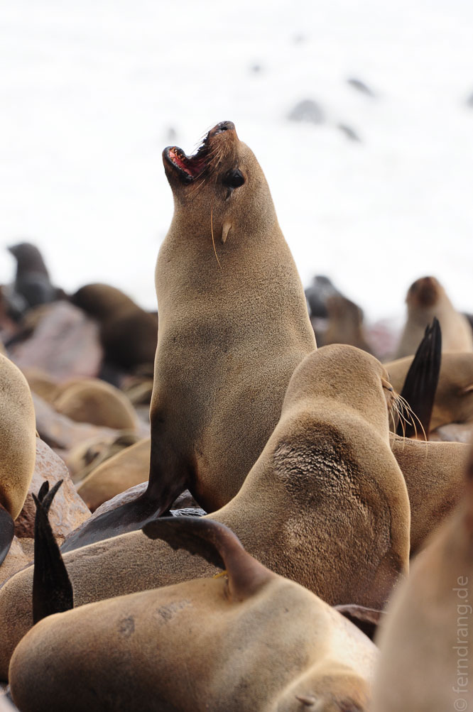
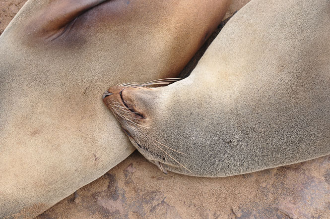
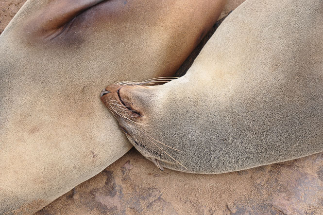
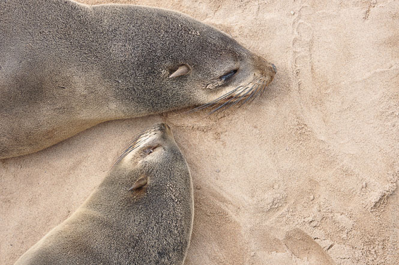
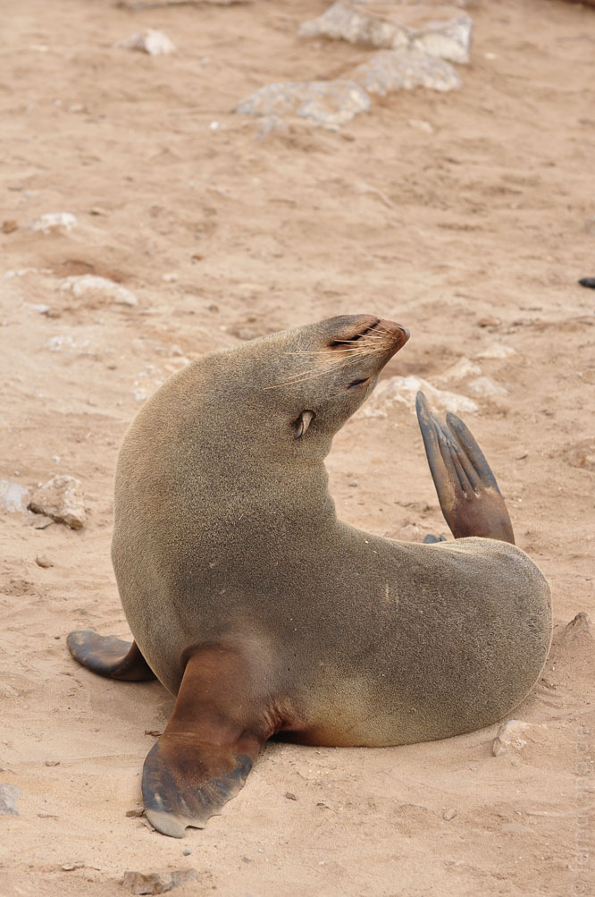
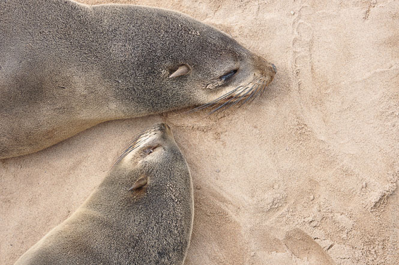
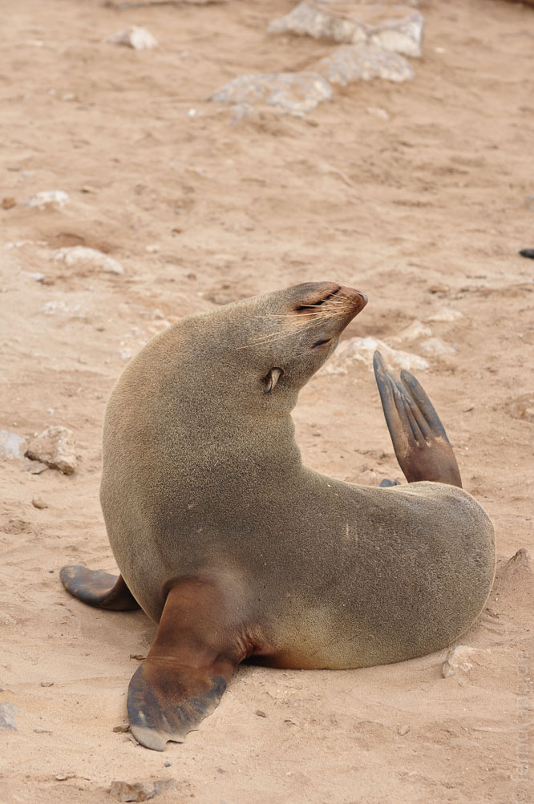
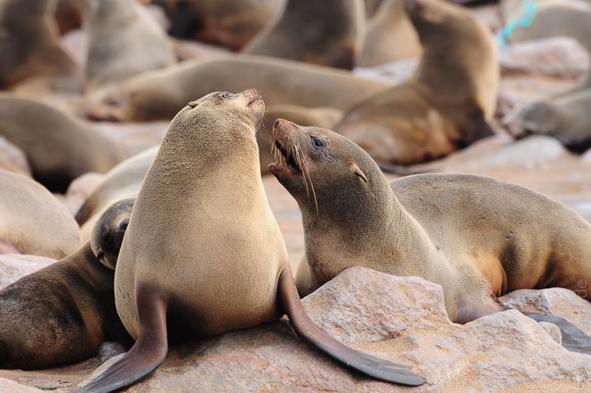
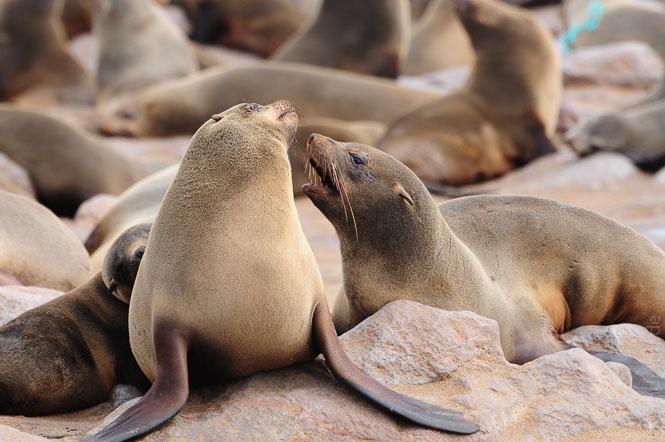

Am Sonntag hört Swakopmund auf zu existieren: schon morgens hat sich ein dichter Nebel über den Ort gelegt, alle Geschäfte sind geschlossen, kein Auto ist unterwegs. Wir haben uns auf den Weg Richtung Norden nach Cape Cross gemacht. Die Straße führt schnurgerade am Meer entlang. Der spärlich mit Büschen bewachsenen Ebene hat der Nebel jede Farbe entzogen. Die Evolution wird hier Menschen ohne Farbwahrnehmung und Autos ohne Lenkräder hervorbringen.
Hier fängt die sogenannte Skelettküste an, was sich an gestrandeten Schiffswracks bemerkbar macht. Noch unwirklicher ist der Ort Wlotzklasbaken, der aussieht wie eine Pioniersiedlung auf dem Mars. Später kommt Hentiesbai, wogegen Swakopmund wie eine Metropole wirkt.
Irgendwann erreichten wir aber doch noch Cape Cross, wo eine Fellrobbenkolonie gegen den Wind stinkt. Zigtausende Tiere gehen hier beliebten Robbentätigkeiten wie Sonnenbaden, Fischen oder Zanken nach. Der Gestank ist überwältigend, aber man wird belohnt, indem man den Robben aus wenigen Metern Entfernung zugucken kann. Das Meer ist wild hier oben und gesprenkelt von unzähligen planschenden Robben. Die Szenerie könnte genauso gut in Alaska sein.

 

 



 
